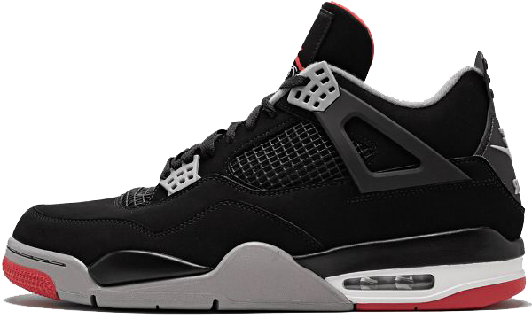

AIR JORDAN 4
ONE OF THE MOST FAMOUS AIR JORDAN SILHOUETTES. THE AIR JORDAN 4 WAS RELEASED IN 1989. IT WAS DESIGNED BY TINKER HATFIELD, MAKING IT HIS SECOND SIGNATURE SHOE IN THE AIR JORDAN SERIES. THE BOXIER-STYLED SHOE IS FAMOUS FOR ITS PLASTIC WINGS ON THE UPPER PART OF THE SHOE ALONG WITH THE NETTING MATERIAL FEATURED ON THE SIDES AND TONGUE. THE AIR JORDAN 4 INITALLY RELEASED WITH 4 COLORWAYS, BUT HAS NOW BEEN RECREATED AND USED IN COLLABS WITH EMINEM, TRAVIS SCOTT/CACTUS JACK, OFF-WHITE, AND MORE.
INITIAL RELEASE: 1989
RELEASES: 92
COLORWAY: RETRO BRED
CURRENT RESALE PRICE: $535 (STOCK-X)